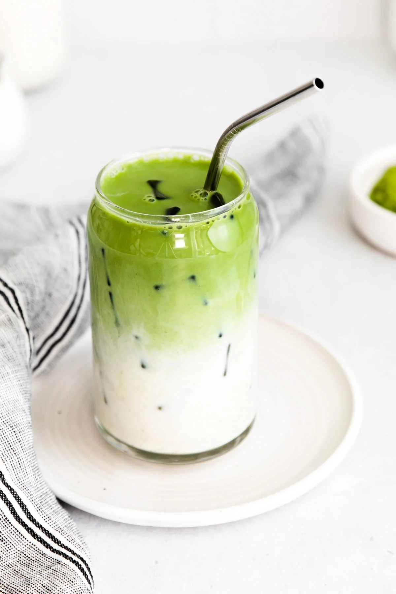
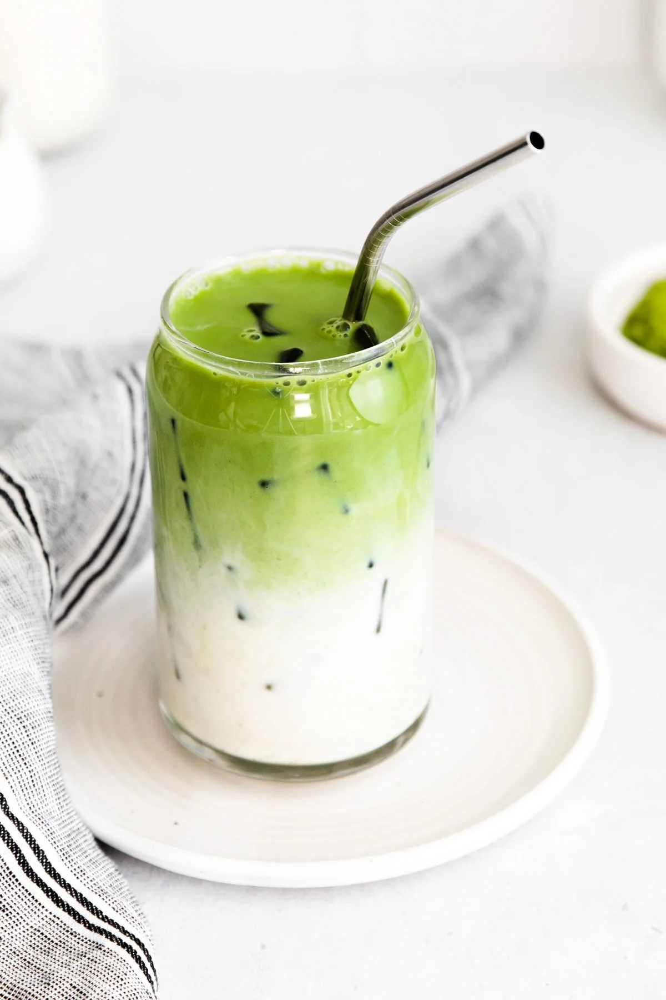

Matcha Latte
 

How to Make Matcha Latte
This is how to make an energizing drink you can make at home! While matcha
may not be caffeinated as a normal coffee, this drink can be the gentle
encouraging push to get something done.
Ingredients
- 2 teaspoons of matcha powder
- 1/4 cup of hot water
- Milk (or any milk alternative)
- Sugar (optional)
- Ice (optional)
Instructions
- In a measuring cup or bowl, whisk the matcha powder and hot water together
until frothy. While it's better to use the bamboo matcha whisk, a standard
whisk will get the job done.
- If you want to add any sugar, this is when to do it as the warm mixture will
help the sugar dissolve.
-
Pour the mixture into a cup and add ice cubes (if you want a colder drink) and milk until satisfied. Stir.
That's it! I hope you enjoy your fresh matcha latte :)
Return to top